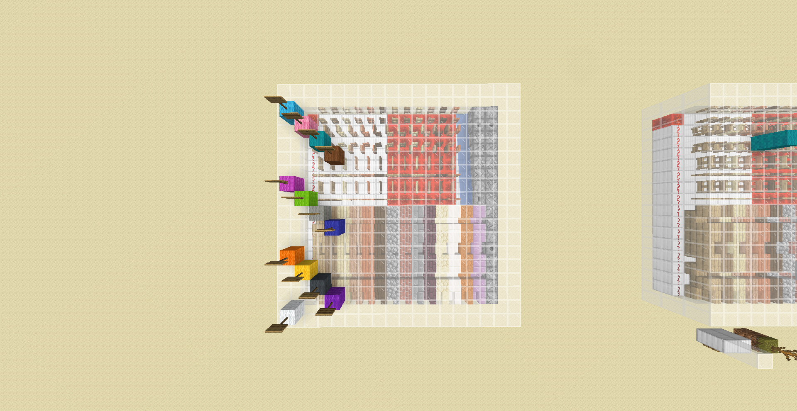

This is a screenshot from the world shown in Myren Eario's video.
Where the bits get split depends on the location in the chunk: each woolblock shown below is a different location.
Their color corresponds with the tab names on the result page from this website.
